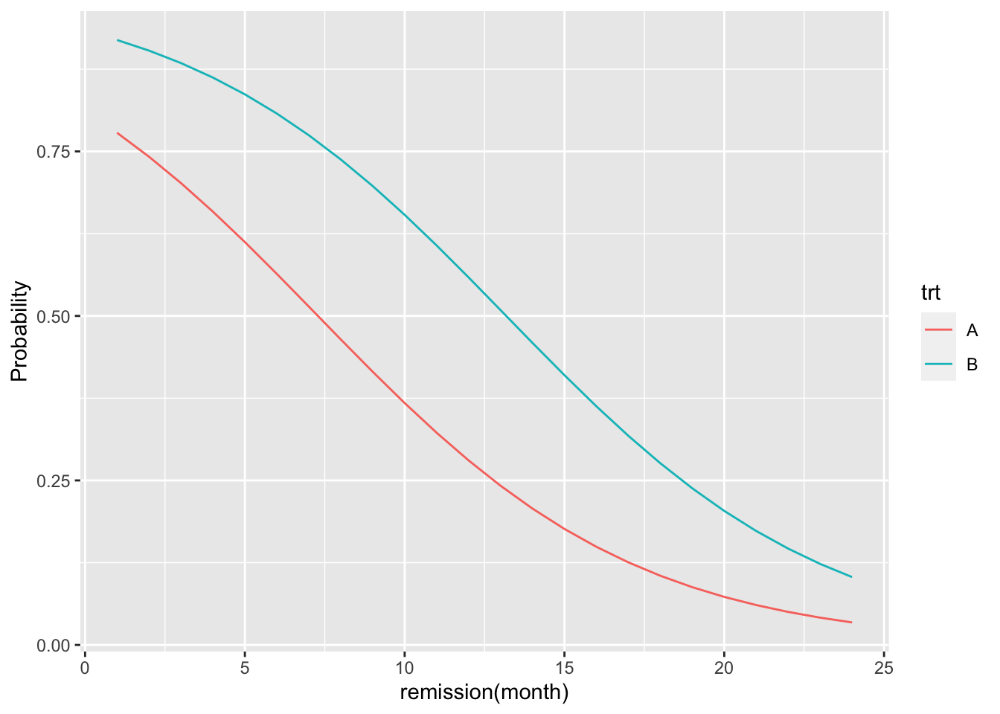

library(tidyverse)
library(ggplot2)
library(epiR)
library(faraway)
library(alr4)
library(sm)
library(MASS)
library(knitr)
library(kableExtra)9 로지스틱 회귀모형 실습 2
9.1 필요한 패키지와 함수
source("../R/functions.R")9.2 예제: 백혈병의 재발
다음은 Jaewon Lee (2005) 의 4장에 나오는 예제이다.
102명의 백혈병(Lukeumia) 환자들을 랜덤하게 두 개의 그룹으로 나누어서 한 그룹에는 처리 A를 하고, 다른 그룹에는 처리 B를 적용하여 재발 여부를 조사하였다. 이때 재발 여부에 영향을 미치는 또 다른 요인으로 호전기간(remission time)을 예측변수로 고려하였다.
변수 remission 는 호전기간(단위는 월)이며 재발여부를 나타내는 y 는 1이면 재발을 나타내며 이 예제에서는 재발할 확률이 관심 사건이다. 이제 처리 그룹 trt 과 호전 기간이 재발 여부에 미치는 영향을 알아보자.
참고로 백혈병(Lukeumia) 환에 대한 자료는 확률변수 \(y_i\) 가 베르누이 분포 \(Berr(p_i)\)를 따른다.
먼저 자료를 데이터프레임으로 읽어 오자.
luk <- read.csv("../data/leukemia.csv", header=T, sep="")
head(luk,5) trt remission y
1 A 3 0
2 A 3 1
3 A 15 0
4 A 6 1
5 A 15 0먼저 재발여부를 나타내는 y 는 1 이 성공 사건이므로 level=c(0,1) 로 지정한다.
luk$y <- factor(luk$y, levels=c(0, 1))먼저 처리와 재발에 대한 분할표를 만들어 보자. 또한 호전 기간의 요약통계도 살펴보자.
table(luk$trt, luk$y)
0 1
A 29 22
B 20 31summary(luk$remission) Min. 1st Qu. Median Mean 3rd Qu. Max.
3.000 6.000 9.000 9.735 12.000 18.000 이제 다음과 같이 함수 glm 을 이용하여 로지스틱 회귀모형을 적합해보자.
luk_res <- glm(y~ trt + remission, family = "binomial", data=luk)
summary(luk_res)
Call:
glm(formula = y ~ trt + remission, family = "binomial", data = luk)
Coefficients:
Estimate Std. Error z value Pr(>|z|)
(Intercept) 1.45595 0.55839 2.607 0.009123 **
trtB 1.17754 0.46669 2.523 0.011631 *
remission -0.19985 0.05589 -3.576 0.000349 ***
---
Signif. codes: 0 '***' 0.001 '**' 0.01 '*' 0.05 '.' 0.1 ' ' 1
(Dispersion parameter for binomial family taken to be 1)
Null deviance: 141.25 on 101 degrees of freedom
Residual deviance: 122.68 on 99 degrees of freedom
AIC: 128.68
Number of Fisher Scoring iterations: 3위의 결과를 해석하면 다음과 같이 설명할 수 있다. 일단 두 환자가 같은 호전 시간 remission 을 보여주었다면 처리 A 와 B 에 대한 재발 확률의 오즈비는 다음과 같이 표현할 수 있다.
\[ \begin{aligned} & \log \left [ {\tfrac{P(y=1|A)}{1-P(y=1|A)}} \right ] -\log \left [ \tfrac{P(y=1|B)}{1-P(y=1|B)} \right ] \\ & \quad = [1.4559 + 0 + (-0.1998)(x)] - [1.4559 + 1.1775 + (-0.1998)(x)] \\ & \quad = - 1.1775 \end{aligned} \]
따라서
\[ \log \left [ \frac {\tfrac{P(y=1|A)}{1-P(y=1|A)}}{\tfrac{P(y=1|B)}{1-P(y=1|B)}} \right ] = - 1.1775 \]
다시 쓰면
\[ \frac {\tfrac{P(y=1|A)}{1-P(y=1|A)}}{\tfrac{P(y=1|B)}{1-P(y=1|B)}} = \exp(-1.1775) = 0.308 \]
따라서 처리 A 를 받은 환자들의 오드가 처리 B 를 받은 환자들의 오드의 약 0.3 배(30%)가 된다는 것을 의미한다. 처리 A의 한자들이 재발할 가능성이 처리 B 를 받은 환자들 보다 작다는 것을 의미하며 처리 trt 의 회귀계수에 대한 p-값이 \(0.0116\) 이므로 처리 간의 차이가 유의한 것을 알 수 있다.
호전기간 remisson 에 대한 효과도 알아보자. 일단 두 환자가 같은 처리를 받았다고 가정하고(예를 들어 처리 A) 호전 시간이 1개월 차이가 는 경우의 배발 확률을 비교해보자.
한 명의 한자는 호전기간이 \(r+1\) 개월이고 다른 환자는 \(r\) 개월 이라면 재발 확률의 오즈비는 다음과 같이 표현할 수 있다.
\[ \begin{aligned} & \log \left [ {\tfrac{P(y=1|x=r+1)}{1-P(y=1|x=r+1)}} \right ] -\log \left [ \tfrac{P(y=1|x=r)}{1-P(y=1|x=r)} \right ] \\ & \quad = [1.4559 + 0 + (-0.1998)(r+1)] - [1.4559 + 0 + (-0.1998)(r)] \\ & \quad = -0.1998 \end{aligned} \]
따라서
\[ \frac {\tfrac{P(y=1|x=r+1)}{1-P(y=1|x=r+1)}}{\tfrac{P(y=1|x=r)}{1-P(y=1|x=r)}} = \exp(-0.1998) = 0.819 \]
즉, 호전기간이 1개월 증가하면 오즈가 이전의 약 81.9% 가 된다. 따라서 호전 기간이 늘어날수록 재발할 확률이 낮아지는 것을 알 수 있다. 가설 검정에 의하여 호전 기간은 매우 유의한 예측변수이다(p-값 = 0.000349).
이제 함수 predict() 를 이용하여 각 환자에 대한 재발 확률의 예측값을 구해보자. 선택문 type = "response"을 이용해야 확률의 예측값이 구해진다.
luk_pred_p <- predict(luk_res, type = "response")
luk_pred_p[1:14] 1 2 3 4 5 6 7 8
0.7019096 0.7019096 0.1762813 0.5638664 0.1762813 0.2804544 0.5638664 0.5638664
9 10 11 12 13 14
0.2804544 0.5638664 0.5638664 0.7019096 0.4151610 0.5638664 각 처리에 따라서 호전기간이 변하면 재발확률이 어떻게 변하는지 에측확률에 대한 그림을 다음과 같이 그려보자.
먼저 두 처리 그룹에 대하여 호전기간에 대한 값을 1개월부터 24개월까지 새로운 자료를 만들자.
t_num = 24
trt_new = c(rep("A", t_num), rep("B", t_num))
remission_new = rep(1:t_num, 2)
luk_new = data.frame(trt = trt_new, remission=remission_new)
head(luk_new,10) trt remission
1 A 1
2 A 2
3 A 3
4 A 4
5 A 5
6 A 6
7 A 7
8 A 8
9 A 9
10 A 10새롭개 만든 데이터프레임 luk_new 에 예측함수 predict() 를 이용하여 예측한 재발확률의 벡터를 만들고 데이터프레임 luk_new 에 포함시킨다.
pred_new = predict(luk_res, newdata = luk_new, type = "response")
luk_new$hatp = pred_new
head(luk_new) trt remission hatp
1 A 1 0.7783541
2 A 2 0.7419740
3 A 3 0.7019096
4 A 4 0.6584875
5 A 5 0.6122346
6 A 6 0.5638664이제 패키지 ggplot2 를 이용하여 처리에 따라서 호전기간에 따른 예측된 재발확률의 변화를 그림으로 그려보자.
ggplot(luk_new, aes(x=remission, y=hatp, color=trt)) +
geom_line() +
labs(x="remission(month)", y="Probability") 
9.3 예제: 종양 치료
다음은 Jaewon Lee (2005) 의 4장에 나오는 예제이다.
두 종류의 종양(T,M)이 있는 환자들을 대상으로 3가지 치료 방법(A, B, C)를 적용하여 종양이 치료되었는지 여부를 조사한 자료이다. 변수 cured 와 uncured 는 각각 치료된 환자와 그렇지 못한 환자의 수를 나타낸다.
연구자의 관심은 치료율이 종양과 치료법에 따라서 다른지 알아보는데 있다.
tumor <- read.csv(text = "
type trt cured uncured
T A 65 18
M B 100 13
T C 56 38
M A 80 15
T B 29 9
M C 78 22
", sep="", header=TRUE )
tumor type trt cured uncured
1 T A 65 18
2 M B 100 13
3 T C 56 38
4 M A 80 15
5 T B 29 9
6 M C 78 22먼저 자료에서 종양의 종류(type) 과 치료법(trt)를 범주형 변수로 정하고 수준(level)과 순서를 정하자.
tumor$type <- factor(tumor$type, levels = c("M", "T"))
tumor$trt <- factor(tumor$trt, levels=c("A", "B", "C"))
str(tumor)'data.frame': 6 obs. of 4 variables:
$ type : Factor w/ 2 levels "M","T": 2 1 2 1 2 1
$ trt : Factor w/ 3 levels "A","B","C": 1 2 3 1 2 3
$ cured : int 65 100 56 80 29 78
$ uncured: int 18 13 38 15 9 22이제 다음과 같인 종양의 종류와 치료법을 예측변수로 하는 로지스틱 회귀식을 적합해 보자.
모형식에서 반응값으로 함수 cbind() 에 성공의 횟수(cured)와 실패의 횟수(uncured)를 지정한다.
tumor_res <- glm( cbind(cured, uncured) ~ type + trt, family = "binomial", data=tumor)
summary(tumor_res)
Call:
glm(formula = cbind(cured, uncured) ~ type + trt, family = "binomial",
data = tumor)
Coefficients:
Estimate Std. Error z value Pr(>|z|)
(Intercept) 1.8575 0.2328 7.978 1.48e-15 ***
typeT -0.7216 0.2202 -3.276 0.00105 **
trtB 0.1288 0.3073 0.419 0.67515
trtC -0.6795 0.2505 -2.712 0.00668 **
---
Signif. codes: 0 '***' 0.001 '**' 0.01 '*' 0.05 '.' 0.1 ' ' 1
(Dispersion parameter for binomial family taken to be 1)
Null deviance: 26.8238 on 5 degrees of freedom
Residual deviance: 1.0604 on 2 degrees of freedom
AIC: 35.669
Number of Fisher Scoring iterations: 4앞에서 종양의 종류와 치료 방법에 대한 수준(level)을 만들 때 종양 M 과 치료법 A 를 첫 수준으로 놓있기 떄문에 효과에 대한 추정치는 0이 된다. 즉, 나머지 종양과 치료법의 효과는 종양 M 과 치료법 A 에 대한 상대적인 효과이다.
추정의 결과를 해석하면 다음과 같다. 비교하고자 하는 효과를 제외한 다른 효과들은 모두 같은 효과를 가정하므로 0으로 놓고 계산해도 무방하다.
- 종양의 종류가
M인 경우의 치료에 대한 오드가T인 경우의 2.06 배 이다 [\(\exp(0.7216)\)]. 따라서 종양의 종류가M인 경우가T인 경우보다 치료 효과가 더 좋다.
\[ \begin{aligned} & \log \left [ {\tfrac{P(y=1|M)}{1-P(y=1|M)}} \right ] -\log \left [ \tfrac{P(y=1|T)}{1-P(y=1|T)} \right ] \\ & \quad = [1.8575 + 0 + 0 ] - [1.8575 -0.7216 + 0] \\ & \quad =0.7216 \end{aligned} \]
- 치료 방법이
A인 경우의 치료에 대한 오드가B인 경우의 87.91 % 이다 [\(\exp(-0.1288)\)]. 따라서 치료 방법이B인 경우가A인 경우보다 치료 효과가 더 좋다.
\[ \begin{aligned} & \log \left [ {\tfrac{P(y=1|A)}{1-P(y=1|A)}} \right ] -\log \left [ \tfrac{P(y=1|B)}{1-P(y=1|B)} \right ] \\ & \quad = [1.8575 + 0 + 0 ] - [1.8575 + 0 + 0.1288 ] \\ & \quad = - 0.1228 \end{aligned} \]
- 치료 방법이
A인 경우의 치료에 대한 오드가C인 경우의 1.97 배 이다 [\(\exp( 0.6795)\)]. 따라서 치료 방법이A인 경우가C인 경우보다 치료 효과가 더 좋다.
\[ \begin{aligned} & \log \left [ {\tfrac{P(y=1|A)}{1-P(y=1|A)}} \right ] -\log \left [ \tfrac{P(y=1|C)}{1-P(y=1|C)} \right ] \\ & \quad = [1.8575 0 + 0 ] - [1.8575 + 0 - 0.6795] \\ & \quad = 0.6795 \end{aligned} \]
- 치료 방법이
B인 경우의 치료에 대한 오드가C인 경우의 2.23 배 이다 [\(\exp(0.8023)\)]. 따라서 치료 방법이B인 경우가C인 경우보다 치료 효과가 더 좋다.
\[ \begin{aligned} & \log \left [ {\tfrac{P(y=1|A)}{1-P(y=1|A)}} \right ] -\log \left [ \tfrac{P(y=1|C)}{1-P(y=1|C)} \right ] \\ & \quad = [1.8575 + 0 + 0.1288 ] - [1.8575 + 0 - 0.6795] \\ & \quad = 0.1228 + 0.6795 = 0.8023 \end{aligned} \]
이제 종양별, 치료 방법별로 치료의 확률에 대한 예측값을 구해보자.
종양의 종류에 관계없이 치료법 B 가 가장 치료 효과가 높다는 것을 알 수 있다.
tumor_new <- tumor[,1:2]
pred_new = predict(tumor_res, newdata = tumor_new, type = "response")
tumor_new$hatp = pred_new
tumor_new %>% arrange(type, trt) type trt hatp
1 M A 0.8650044
2 M B 0.8793494
3 M C 0.7645810
4 T A 0.7569227
5 T B 0.7798294
6 T C 0.6121479여기서 주의할 점은 각 종양과 치료법의 조합에서 구할 수 있는 치료된 환자들의 표본 비율과 로지스틱 회귀에서 나타나는 추정 확률은 약간 차이가 난다. 그 이유는 로지스틱회귀에서는 최대가능도함수 추정법을 사용하여 각 조합의 효과를 추정하기 때문에 단순한 표본 비율과 차이가 날 수 있다.